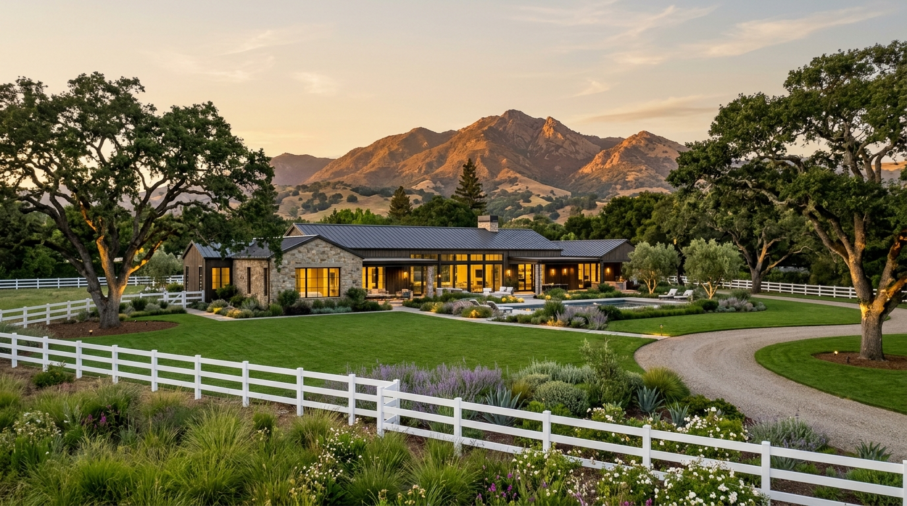
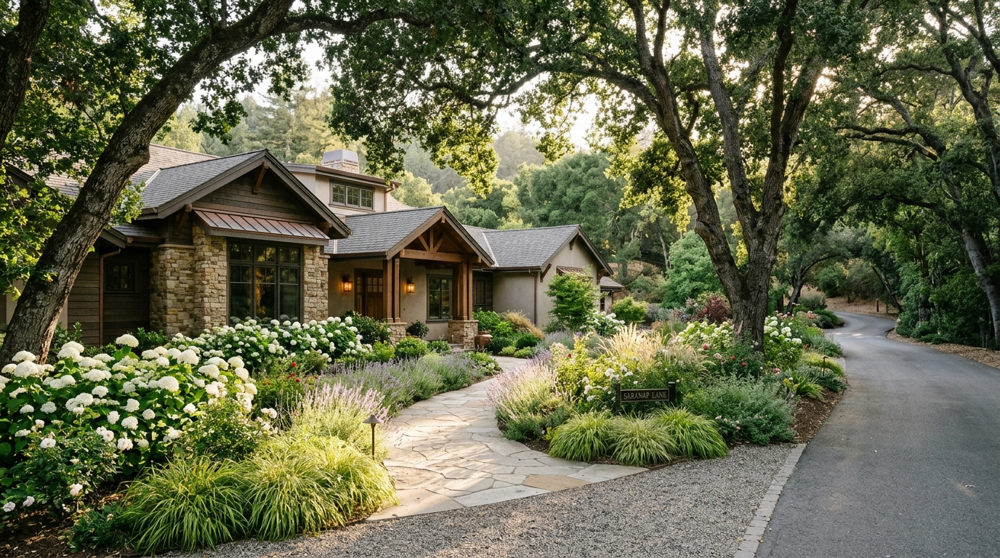
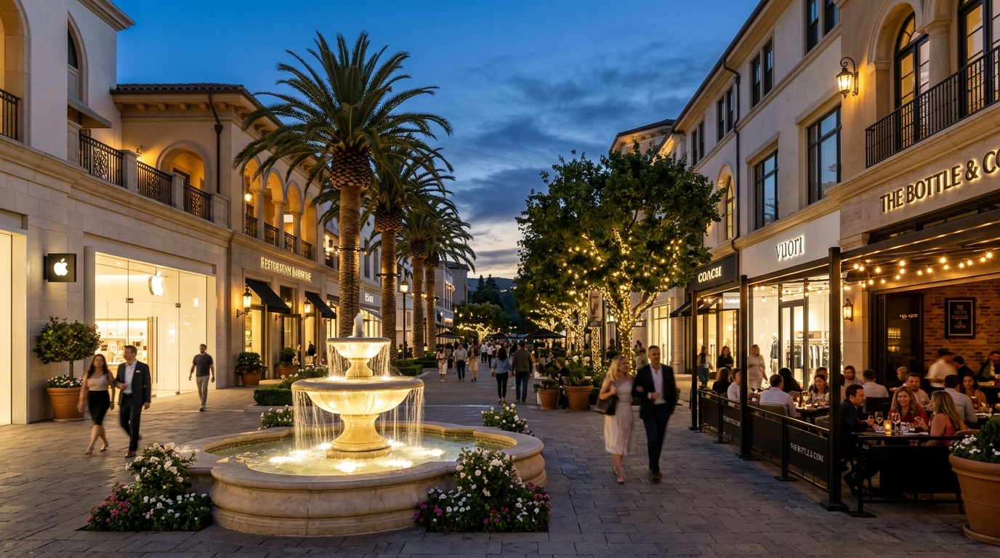
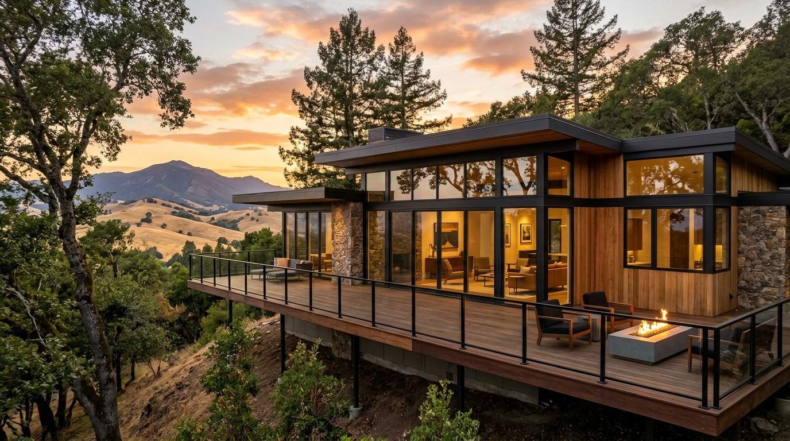

COSMOPOLITAN DINING, PREMIER SHOPPING & FOOTHILL RETREATS
Serving as the vibrant commercial and cultural capital of the East Bay, Walnut Creek delivers high-end open-air shopping at Broadway Plaza, top-rated dining, and easy BART access into downtown San Francisco. Outside its energetic core lies over 2,700 acres of protected open space, scenic ridgeline trails, and peaceful suburban ranch neighborhoods.
The sophistication and retail perks of a major city paired with pristine tree-lined streets, easy transit connectivity, and vibrant social plazas.
Sunny morning farmers’ markets, Broadway Plaza open-air luxury retail, evening performances at the Lesher Center, and impromptu date nights.
The striking presence of Mount Diablo provides a breathtaking daily backdrop, offering immediate access to Shell Ridge and rugged open spaces.
From secluded custom view estates in the western foothills to iconic mid-century ranches in Rancho San Miguel and chic downtown penthouses.
Walnut Creek offers all the career connectivity and dining energy of a city while preserving the warmth, safety, and security of a true hometown.
Walnut Creek benefits from dual renowned educational infrastructures: the elite Acalanes Union High School District and high-ranking neighborhood academies within the Walnut Creek School District.
Distinguished flagship of the Acalanes Union High School District, celebrated for top AP pass rates, high Ivy League matriculation, and award-winning arts.
High-performing secondary school serving the foothill and equestrian neighborhoods of Walnut Creek, featuring renowned Sports Medicine and STEM curricula.
Ranked in the top 5% of California middle schools, WCI offers comprehensive honors pathways, speech, debate, and championship robotics.
Home of the acclaimed Parent Integrated Program (P.I.P.) and active community involvement, set within a peaceful residential enclave.
Celebrated for progressive literacy programs, dedicated technology enrichment, and high test score consistency.
Set on nine wooded acres in Walnut Creek, Seven Hills delivers an extraordinary independent education focused on critical thinking and character.

Sprawling single-story ranches, equestrian parcels, and direct access to Northgate High School and Castle Rock Regional Park.

Unincorporated enclave bordering Lafayette with eclectic custom residences, mature oaks, and scenic country lanes.

Luxury condominiums, penthouses, and townhomes steps away from Nordstrom, Apple, Neiman Marcus, and world-class dining.

Wooded foothill living with views of Mount Diablo, mid-century architecture, and direct access to Shell Ridge Open Space.
Explore the Caldecott Tunnel transition: 18-minute Yellow Line BART to Rockridge, top Acalanes district schools (Las Lomas & Northgate), and Broadway Plaza luxury shopping.
Off-market opportunities and upcoming listings in Walnut Creek are available via Compass Private Exclusives. Connect directly with Steven for discreet access and current market inventory.